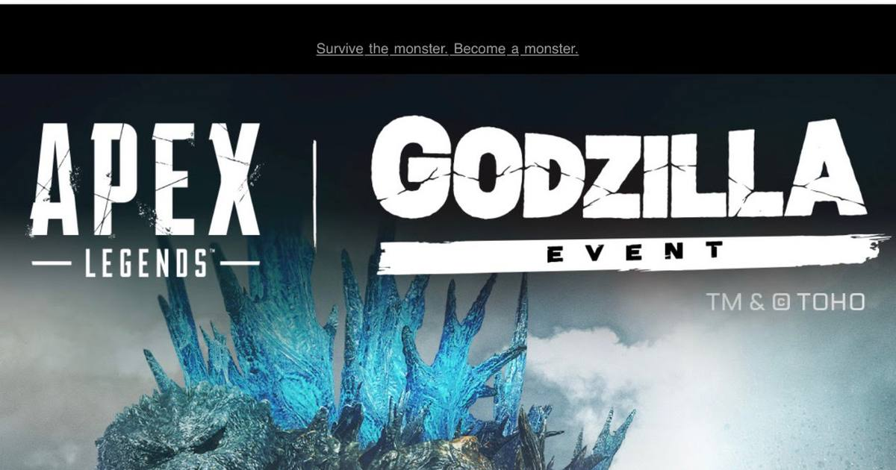

Godzilla is coming to Apex Legends: Storm Point takeover starts November 10
Godzilla stomps into Apex Legends on November 10 — a Storm Point Wildcard takeover, a heat-ray Devotion, ten kaiju Legend skins, and a mythic Dorsal Dagger, running through December 1.

Disclosure: this post contains affiliate links. I earn a commission on qualifying purchases.
Godzilla is coming
Godzilla is stomping into Apex Legends. Respawn announced the Apex Legends | Godzilla Event today, November 5, and it runs November 10 through December 1 — three weeks of the King of the Monsters tearing up Storm Point. The tagline says it all: survive the monster, become a monster.
This is not a skins-only crossover. Godzilla is on the map, and you cannot kill it. You can only survive it.
Storm Point becomes Godzilla's stomping ground
The centerpiece is a Wildcard takeover of Storm Point. The map is mid-attack: damaged buildings, burnt trees, fallen signs, and destruction scattered across the island, with Godzilla looming above it all.
When Godzilla marks an area for destruction, a countdown starts before its Heat Ray strikes. Players brave enough to run into the blast zone before the beam hits can grab a Care Package holding a custom Devotion — a heat-ray weapon that tracks enemies on hit. It is the one piece of Godzilla's power you can actually take for yourself.
There is also a new Kaiju Zone on Storm Point to explore for Kaiju Energy, Kaiju Crates, and kaiju-themed finishers.
The loot: ten kaiju skins and a mythic melee
Ten Legends are getting Godzilla-themed skins drawn from across the franchise, including some deep cuts: Octane, Fuse, Ash, Horizon, Wattson, Ballistic, Valkyrie, Wraith, Loba, and Sparrow. The monsters represented include Godzilla, Mechagodzilla, Mothra, and Destoroyah.
The headline prize is the Dorsal Dagger, a new Universal Mythic Melee inspired by one of Godzilla's dorsal fins, with a matching Deathbox. It is Wraith's first mythic melee and the game's second universal mythic melee. Nine Legendary weapon skins are in the mix too, for the Devotion, Hemlok, Rampage, CAR, Havoc, Longbow, Wingman, Prowler, and Sentinel.
The Godzilla Event Pass runs on challenges: the free track earns rewards like the Jet Jaguar Octane skin and Godzilla Event Packs, while the Premium Track (950 Apex Coins) unlocks the Iconic Ghidorah 1991 Catalyst skin, the Legendary Gravity Beam Prowler skin, Epic Apex Packs, and more. Twitch Drops run November 10–17 with select creators.
Why now
The event is tied to Godzilla's return to theaters — Godzilla Minus Zero hits theaters this week, with a 3D re-release in IMAX and large format on November 6. The timing is no accident: the movie brings the monster back to the big screen, and Apex brings it to the Outlands the same week.
Respawn teased this one first. On November 2, the official Apex account posted a 17-second clip captioned "Something big is coming…" — a glowing Apex logo splitting into a row of shapes that turned out to be Godzilla's dorsal plates, with a roar at the end. Three days later, the full reveal landed.
The details
• Event: Apex Legends | Godzilla Event
• Dates: November 10 – December 1, 2026
• Mode: Wildcard takeover on Storm Point
• Headline weapon: custom Heat Ray Devotion from blast-zone Care Packages
• Skins: 10 kaiju Legend skins, 9 Legendary weapon skins
• Mythic: Dorsal Dagger universal melee + matching Deathbox
• Platforms: PlayStation 4, PlayStation 5, Xbox One, Xbox Series X|S, Nintendo Switch 2, PC (Steam, EA App, Epic Games Store)
Watch
Source: Apex Legends | Godzilla Event — Apex Legends on YouTube. The official event trailer: Godzilla attacks the Outlands and Storm Point becomes its stomping ground.
Gear up: Razer — mice, keyboards, headsets and laptops.